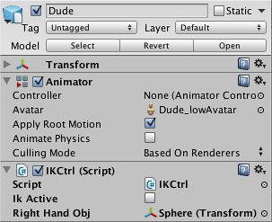

Unity Manual>User Guide>Creating Gameplay>Mecanim Animation System>Working with humanoid animations>Inverse Kinematics (Pro only)
Inverse Kinematics (Pro only)
Most animation is produced by rotating the angles of joints in a skeleton to predetermined values. The position of a child joint changes according to the rotation of its parent and so the end point of a chain of joints can be determined from the angles and relative positions of the individual joints it contains. This method of posing a skeleton is known as forward kinematics.
However, it is often useful to look at the task of posing joints from the opposite point of view - given a chosen position in space, work backwards and find a valid way of orienting the joints so that the end point lands at that position. This can be useful when you want a character to touch an object at a point selected by the user or plant its feet convincingly on an uneven surface. This approach is known as Inverse Kinematics (IK) and is supported in Mecanim for any humanoid character with a correctly configured Avatar.

To set up IK for a character, you typically have objects around the scene that a character interacts with, and then set up the IK thru script, in particular, Animator functions like SetIKPositionWeight, SetIKRotationWeight, SetIKPosition, SetIKRotation, SetLookAtPosition, bodyPosition, bodyRotation
In the illustration above, we show a character grabbing a cylindrical object. How do we make this happen?
We start out with a character that has a valid Avatar, and attach to it a script that actually takes care of the IK, let's call it IKCtrl:
using UnityEngine;
using System;
using System.Collections;
[RequireComponent(typeof(Animator))]
public class IKCtrl : MonoBehaviour {
protected Animator animator;
public bool ikActive = false;
public Transform rightHandObj = null;
void Start ()
{
animator = GetComponent<Animator>();
}
//a callback for calculating IK
void OnAnimatorIK()
{
if(animator) {
//if the IK is active, set the position and rotation directly to the goal.
if(ikActive) {
//weight = 1.0 for the right hand means position and rotation will be at the IK goal (the place the character wants to grab)
animator.SetIKPositionWeight(AvatarIKGoal.RightHand,1.0f);
animator.SetIKRotationWeight(AvatarIKGoal.RightHand,1.0f);
//set the position and the rotation of the right hand where the external object is
if(rightHandObj != null) {
animator.SetIKPosition(AvatarIKGoal.RightHand,rightHandObj.position);
animator.SetIKRotation(AvatarIKGoal.RightHand,rightHandObj.rotation);
}
}
//if the IK is not active, set the position and rotation of the hand back to the original position
else {
animator.SetIKPositionWeight(AvatarIKGoal.RightHand,0);
animator.SetIKRotationWeight(AvatarIKGoal.RightHand,0);
}
}
}
}
As we do not intend for the character to grab the entire object with his hand, we position a sphere where the hand should be on the cylinder, and rotate it accordingly.
This sphere should then be placed as the "Right Hand Obj" property of the IKCtrl script

Observe the character grabbing and ungrabbing the object as you click the IKActive checkbox
(back to Mecanim introduction)
Page last updated: 2012-11-06